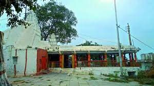

Temples in Hyderabad
Famous Temples in Hyderabad
- Birla Mandir

- The Birla Mandir in Hyderabad is dedicated to the Lord Venkateshwara of Tirumala.
- It is in fact modelled after and is the replica of the idol of Balaji of Tirupati
- It Created in 1976 by Swami Ranganathananda from Ramakrishna Ashram and constructed by
the Birla Foundation
- Chilkur Balaji Temple

- Chilkur Balaji Temple is situated in the picturesque village of Chilkur.
- It is about 30 kilometres away from Hyderabad.
- It is also called the VISA Temple, and sits prettily on the banks of the Osman Sagar Lake, near the Vikarabad Road.
- Sri Jagannath Temple

- This Temple is Located in Banjara Hills, Hyderabad.
- Jagannath Temple is a modern Hindu temple built
by the Odia community dedicated to Hindu God Jagannath- God of the Universe.
- It is Constructed in red sandstone, the Jagannath temple follows the ancient shikhara style pattern.
- ISKON Temple

- Iskcon is known all over for being some of the most beautiful, active, spiritual and
religious centres in the country.
- One such temple, Iskcon Hyderabad can be found in the
Nampally region.
- The main deity in Iskcon Hyderabad temple is Lord Krishna.
- One can also see idols of Sri Gaura-Nitai, Sri Jagannatha Baladeva-Subhadra and Sri Radha Madana-Mohana.
- Balkampet Yellamma Pochamma

- This Temple is Recognised as one of the oldest temples in Hyderabad.
- The Balkampet
Yellamma temple was constructed in the 15th century, which was later renovated in the 20th.
- Goddess Yellamma is an incarnation of Kali and the idol of the deity is present 10 feet below the ground.
- Hare krishna Golden Temple

- The first Golden temple of Telangana was established recently in 2018
- It is present in road number 12, Banjara Hills.
- There are two shrines in the temple - one of Lord Lakshmi
Narasimha Swamy and the other of Lord Krishna and Radha together.
- Sri Bhagya Laxmi Mandir, Charminar

- Located in one of the most ironical places for a temple, the Bhagya Lakshmi temple in Charminar
is arguably one of the most famous temples in Hyderabad.
- People flock to the temple on any occasion
related to Goddess Lakshmi.
- The temple is said to be erected in the late 1960s and it has been there ever since.
- Sai Baba Temple Dilsukhnagar

- This temple is famous since the 90s, in Dilsukhnagar is a routine visit for people who worship Lord
Sai Baba.
- People come here to see the Marathi Pooja and Aarti every day in the morning and evening.
- The place generally finds a lot of crowd on Thursdays, as the day is considered to be special for
worshipping Sai Baba.
- Swayambhu Channakeshava Temple

- This temple dates back to 600 years and it is said to be one of the oldest temples in Hyderabad.
- The temple holds rich historical importance, especially during the post-Vijayanagara period.
- The sculptures are crafted with great skill and finesse, as most of the idols are carved against
the rock on which the temple is present in Chandrayangutta.
- Karmanghat Hanuman Temple

- This Temple is Erected by the Kakatiyas in the 12th century.
- It holds great historical importance,
when Aurangzeb had tried to bring down the temple.
- He heard a thunderous voice say,“Mandir todna
hai toh Rajan, kar man ghat”, which translates to ‘If you want to break the temple, O King,
harden your heart’.
- Hence the name ‘Kar-Man-Ghat’ and the idol of Lord Hanuman is seen meditating.
- The devotees call it Dhyana Anjaneya Swamy.